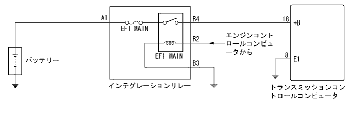
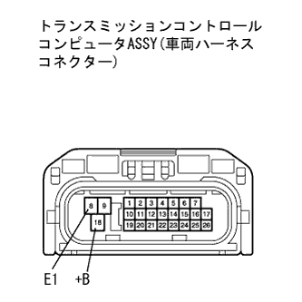

Electronically Controlled Automatic Transaxle [ECT] (U660E) ECU Power Source System |

| Step 1 | Inspect Transmission Control Computer Assembly (Power Source Voltage) |
 |
Disconnect the transmission control computer connector.
Turn IG ON.
Using SST (Toyota electrical tester), measure the voltage between the terminals. (For Terminals of ECU, see)
| Tester Connection (Terminal Symbol) | Condition | Standard |
|---|---|---|
| 18(+B) - 8(E1) | IG ON | 11 to 14V |
Turn IG OFF.
Using SST (Toyota electrical tester), measure the resistance between the terminals. (For Terminals of ECU, see)
| Tester Connection (Terminal Symbol) | Condition | Standard |
|---|---|---|
| 8 (E1) - Body ground | Always | Below 1 Ω |
|
| ||||
| OK | ||
| ||